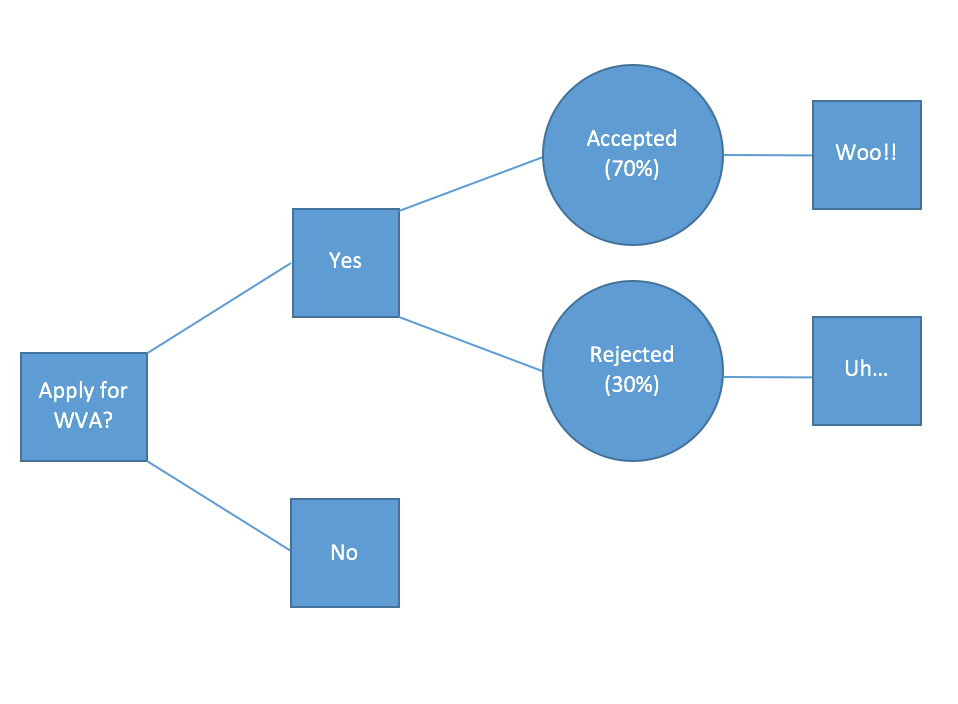
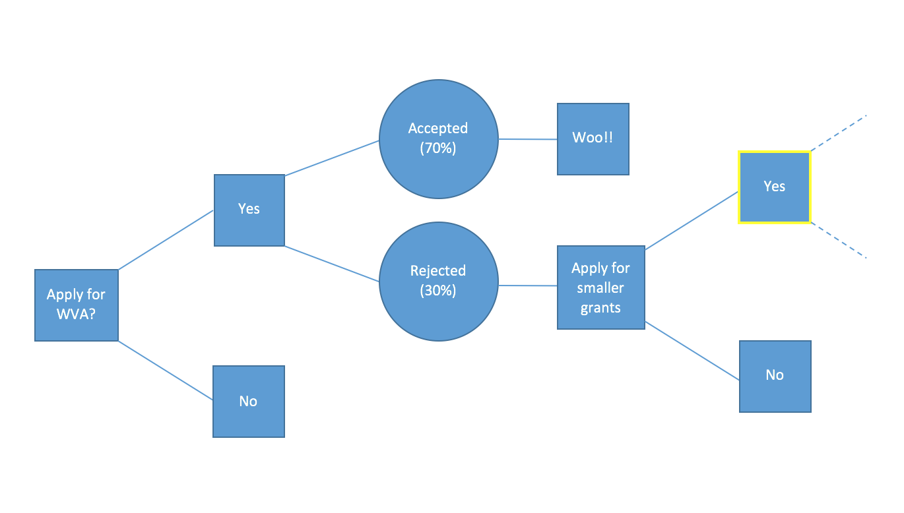

Today SolutionLoft, the startup I’m working on, was not chosen as a recipient for the Wharton Venture Award – a $10k equity-free grant to work on an idea during the summer. And in short, rejection fucking sucks.
Yes, mom, I’m sorry for dropping the f-bomb… but it’s true, especially when it’s the rejection of something you’ve poured so much blood, sweat and tears into. But there’s a way to make it easier and more productive. The basic ingredients are a decision tree, preparation, and discipline.
Decision Trees 101
From Wikipedia:
It’s a… “decision support tool that uses a tree-like graph or model of decisions and their possible consequences, including chance event outcomes, resource costs, and utility.”
The bottom line is that a decision tree maps down your thought process and the possible end results, including your reaction to each.
In more detail, any decision has a number of options that you can choose. From any option that you choose, there are a number of different outcomes. Which outcome occurs is out of your control (whether you get accepted or rejected). What is in your control is how you respond to the different outcomes, extending the tree further to the next decision.
Rejection without Decision Trees
Without decision trees, the flow of events looks a little like the following:

While it’s not a problem if everything goes well (i.e. the events turn out as you would like), if things don’t go as planned, the emotional toll is much harder. Rejection sucks much worse. Without having prepared for the possibility of failure with the help of a decision tree, you’re left with a much higher cognitive load.
Now you must not only reconcile and reflect on events not playing out in your favor but you must also make a decision about what to do next. Do you continue working as you have? Do you pivot to something else? Do you give up altogether and send your resume to Goldman?
Rejection with Decision Trees
With decision trees, the decision about what to do next is planned for in advance:

As you can see, the decision on whether to quit or keep on has already been made by you. On the chance that you get rejected, you don’t have the added burden of deciding what to do next. This allows you to let your emotions have an hour or two to vent before immediately moving on to what’s next on the tree. This is where discipline becomes key.
Adding in Discipline
The problem with plans is that they’re only that. They’re only as strong as they’re followed. Where your preparation for failure leaves off is where your discipline becomes key. The following is how I suggest to deal with rejection in a disciplined way:
- Before opening the email, remind yourself what your decision tree dictates that you’re going to do in each case.
- Open the email and run through it to understand the end result.
CMD-Qyour email client.- Give yourself two hours to let it sink in and for your emotions to run through the due course of reactions. Go for a walk. Get a milkshake.
- Two hours later: open up your email client and pull up the email.
- Write down the key takeaways of the feedback and what you’ve learned from the process as a whole. Save the note so that you can reflect on it later.
- Archive the email.
- Immediately start working on the next step of the decision tree.
By having a set routine for the outcome combined with a preplanned next step in your decision tree, you allow yourself to emotionally discharge without losing your productivity or end vision.
Summary
Ahead of YC interview decisions, rejection for thousands of us is right around the corner, but there’s a way to turn it to your favor with some preparation, a decision tree, and a little shake of self-discipline. Prepare your decision tree ahead of being notified of the decision, focusing on what you plan to do in each possible outcome. Be disciplined at the time of notification. Keep hustling.